TrackMile notices when you're driving, sorts business from private, and turns the whole tax year into a claim you can hand over in one tap — no odometer diary, no guesswork.
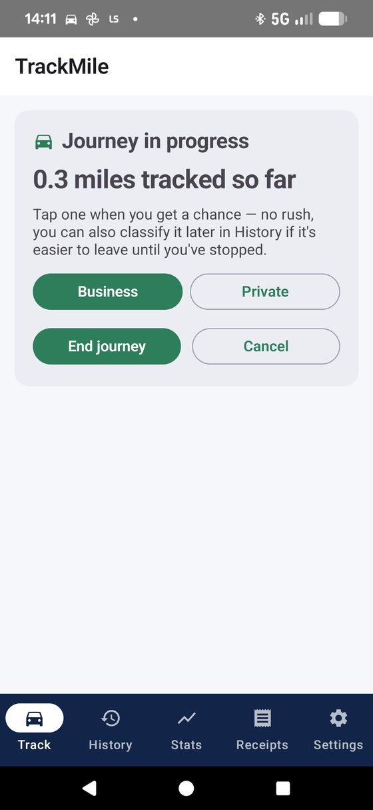
Current HMRC approved rate for the first 10,000 business car/van miles in the 2026/27 tax year — TrackMile applies it automatically, tier by tier.
To start a trip. Detection runs quietly in the background and begins recording the moment you're moving.
Of your data stays on your phone. No cloud account, no server, nothing to leak — it's a local database, not a subscription.
Real screenshots from a working build — not renders, not a Figma file. Some placeholder trip data is still on screen, but every layout, label and card here is exactly what ships.
A journey being tracked live. Nothing to type while driving — just a mile count, a Business/Private choice, and End journey when you're done.
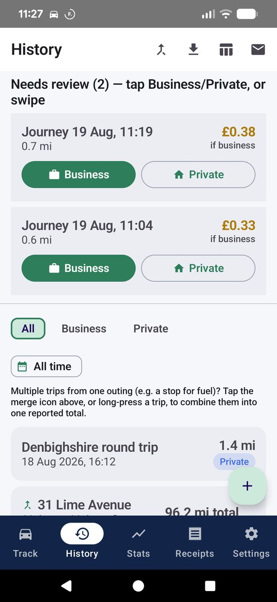
The review queue — each unclassified drive shows what it's worth as a business mile before you've even tapped anything.
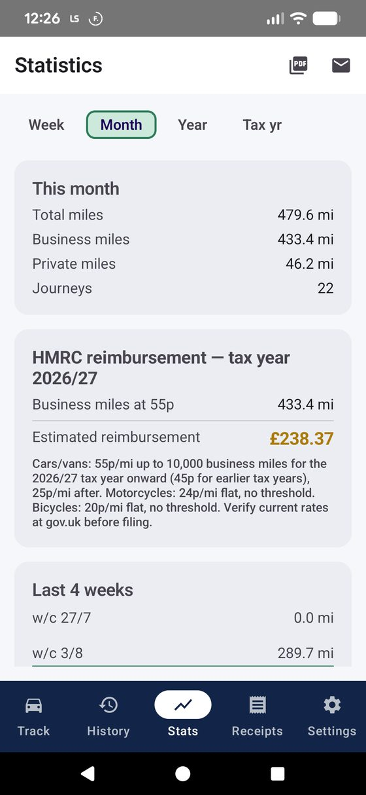
This month's totals, the live HMRC reimbursement figure, and a 4-week trend — all updating as trips come in.
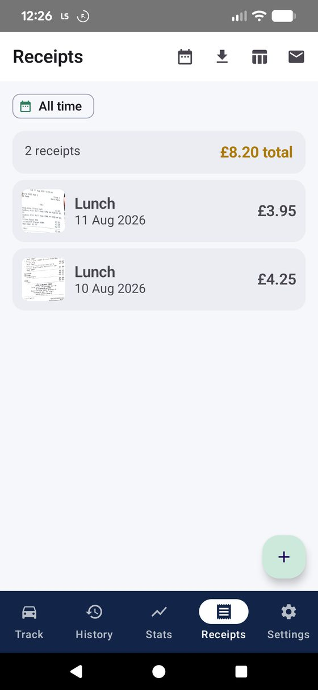
Fuel, parking and toll receipts, photographed and filed with a running total — no separate expenses app needed.
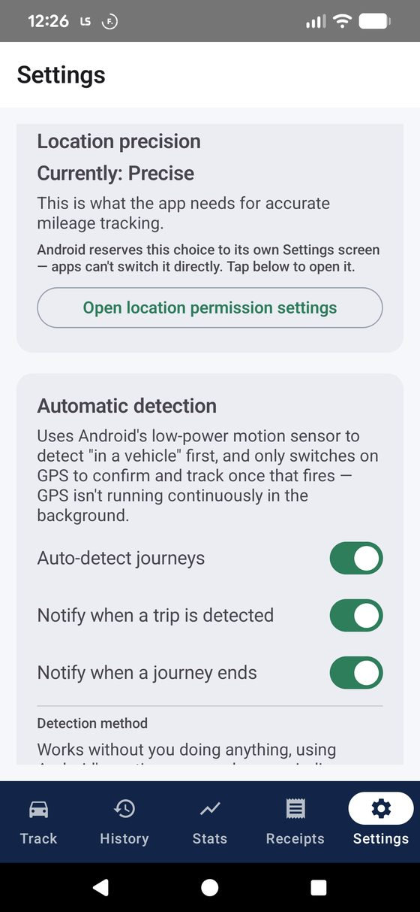
Detection method, responsiveness, quiet hours, backups, calendar sync — genuinely configurable, not just a toggle for dark mode.
See every setting explained →
Three real ways people leave HMRC mileage relief on the table — and how TrackMile closes the gap, using the app's actual features rather than a sales pitch.
A morning that starts at the office, takes in a fire-risk assessment at one unit, a contractor meeting at another, and a lightning-protection survey across town, easily becomes four separate journeys. Writing each one down after the fact — or worse, at month-end from memory — means rounding down, or simply forgetting the short hops. TrackMile logs every leg the moment it happens, reverse-geocodes the start and end into a real place name like "Unit 4, Deeside → Colwyn Bay Retail Park," and lets multi-stop days get grouped into one combined figure with Merge Trips, so a report to an accountant reads as one clean trip instead of four fragments.
Callouts, supplier runs and job-to-job driving add up fast, and no one wants to type an odometer reading standing in the rain outside a client's house. TrackMile's auto-detected journeys need nothing entered while driving — just a live mile counter — and once you're home, unclassified drives sit in a swipe-to-review queue: right for business, left for private. Set a Mon–Fri working-hours window once, and jobs during the day classify themselves with no prompt at all.
Handing over a spreadsheet at month-end is slow for you and slower for whoever has to check it. TrackMile builds the report as you go: HMRC-ready PDF and Excel exports, filtered to an exact date range ("last month" in two taps), and an Email export that opens straight into a compose window with the file already attached — addressed to a saved default recipient like an expenses inbox, no retyping needed. A running per-trip "£ potential" on the review queue shows what a drive is worth before you've even classified it.
A low-power motion sensor (not raw GPS) notices you've entered a vehicle and quietly switches on tracking — no prompt, no tap, nothing to do.
A saved route or your working-hours window sorts most trips instantly. Anything left over waits in a swipe-to-review queue — right for business, left for private.
The current HMRC rate is applied automatically, tier by tier, per vehicle type — car, van, motorcycle or bicycle — so the running total is always accurate.
Export a PDF report, an Excel sheet, or a CSV, filtered to any date range, and email it straight to your accountant or employer in one flow.
Every feature below exists in TrackMile today — grouped by what it's actually for.
Watches for genuine driving using Android's low-power Activity Recognition sensor, not continuous GPS — kicks into full accuracy the moment you're actually moving.
Connecting to Android Auto switches straight to fast polling — the quickest way TrackMile can know you're about to drive.
An independent low-power check every 15–180 seconds (your choice) catches any trip Activity Recognition misses — detection can't silently stop working.
Recognises when you've parked and walked away — the odometer pauses so a stroll to a shop never gets added to your mileage.
Ends a trip itself once you've been stopped for a configurable duration — no need to remember to press "end."
Passive (automatic), Android Auto only (fastest, zero background polling otherwise), or fully manual — plus a do-not-track schedule for evenings and weekends.
Mark a journey "favourite" once and any future trip starting near it classifies itself — same type, category and purpose, no prompt.
Set a Mon–Fri time window; any drive inside it is logged as business automatically.
Anything not auto-classified lands in "Needs review" at the top of History — swipe right for business, left for private.
Log an errand partway through a business trip as its own segment, without losing the original journey's classification.
Forgot your phone, or drove before installing TrackMile? Add a past trip by hand — date, times, odometer, purpose — and it behaves exactly like any other journey.
Group several legs of a multi-stop or multi-day trip into one collapsible card with a combined total — each leg keeps its own record underneath.
Applies the correct tax-year rate automatically, including the 10,000-mile tier split for cars and vans, and flat rates for motorcycles and bicycles.
A properly formatted PDF report for an employer or accountant, a genuine .xlsx with bold headers, or a plain CSV — pick what the person on the other end needs.
Opens a compose window with the file already attached and a default recipient pre-filled — no retyping an accountant's address every month.
This month, last month, this tax year, or a custom range — applied consistently across the on-screen list and every export.
Photograph fuel, parking and toll receipts and link them to a specific trip or log them as general expenses, with a running total and full CSV/Excel export.
The review queue shows what an unclassified trip would be worth as a business mile — split correctly across HMRC tiers if it crosses the 10,000-mile threshold.
Car, van, motorcycle or bicycle, each with its own correct HMRC rate — Statistics breaks totals down by vehicle type automatically.
Journeys reverse-geocode into readable names — "St Asaph to Llandudno" — instead of a generic timestamp.
A small map with start/end pins on every journey — or the actual driven path, breadcrumb by breadcrumb, if detailed tracking is switched on.
Writes journeys straight to your phone's own calendar — Google, Outlook, or whatever's already syncing — filterable by business, private, or both.
Every vehicle, journey, favourite and receipt photo, zipped into one file you can save to Drive or email to yourself — restore wipes and replaces everything, with a clear warning first.
Delete a journey and a snackbar offers a few seconds to undo before it's actually gone — plus a recovery queue for any trip that started tracking but never got marked finished.
No cloud, no account, no server sync. Every journey lives in a database on your phone, full stop.
A plain-English explainer appears before the system's background-location prompt — so you know exactly why it's needed before Android ever asks.
Two independent rules — full days off, and active-hours-only on the rest — so weekends and evenings get zero background checking of any kind.
Prefer zero background activity, full stop? Switch to manual start — nothing runs unless you tap "Start journey" yourself.
GPS switches on only once real movement is detected, and eases back to a slower poll rate once a trip is confirmed — not always-on tracking.
Nothing leaves the phone unless you tap export or email — there's no background upload of any kind to worry about.
TrackMile requests background location because that's the only way it can notice you're driving without you opening the app first. Google Play applies extra scrutiny to that permission — for good reason — so here's the honest version of what happens with it.
Because TrackMile requests ACCESS_BACKGROUND_LOCATION, three things are true before you ever see the system permission prompt:
Five prompts, in the order Android shows them. One of them matters more than the rest — it's flagged below, because getting it wrong is the single most common reason automatic detection doesn't work.
Android splits location permission into two separate steps on purpose. The first popup only offers "While using the app" or "Only this time" — neither of those is enough for automatic detection, because it means TrackMile can only see your location while it's open on screen. To detect a trip starting while your phone's in your pocket, it needs to be set to "Allow all the time" — and Android only lets you set that on a second screen, not the first popup. Miss that second step and the app will seem broken: no trips ever get detected unless you have TrackMile open and staring at the screen while you drive.
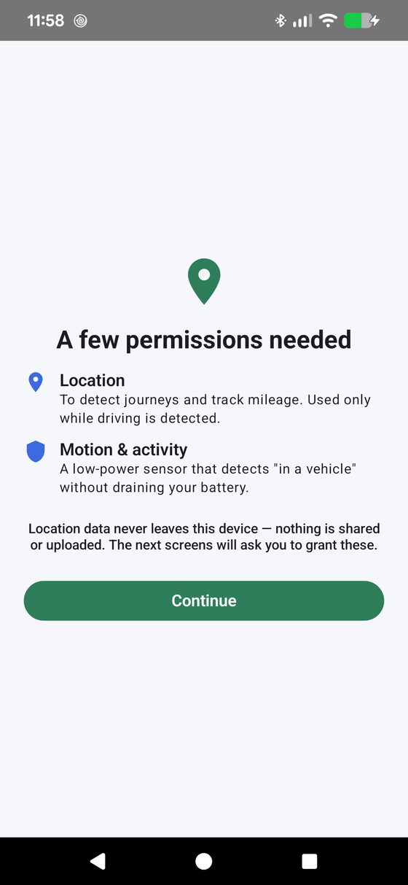
Before Android's own popups appear, TrackMile explains what's coming and why — location data never leaves the device, and the next screens are what will actually grant it.
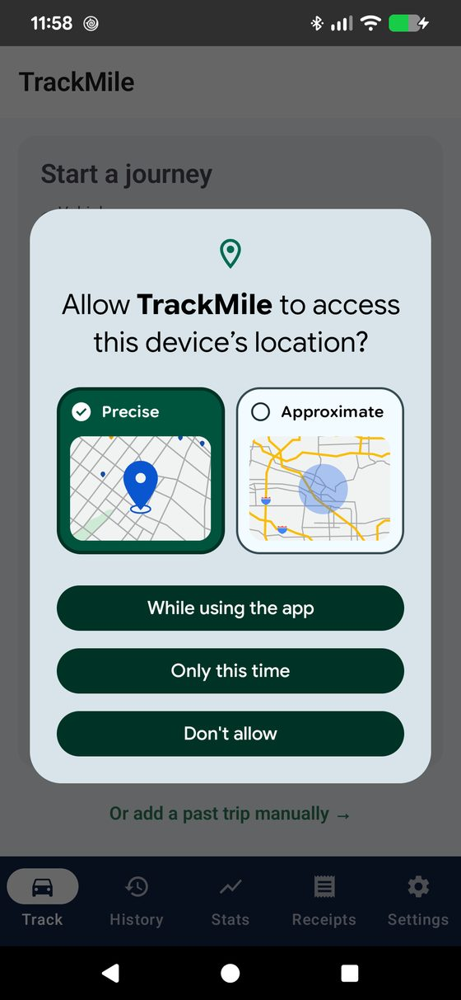
Choose Precise (needed for accurate mileage) and either "While using the app" or "Only this time." This step alone is not enough for background detection — Android deliberately doesn't offer "Allow all the time" here.
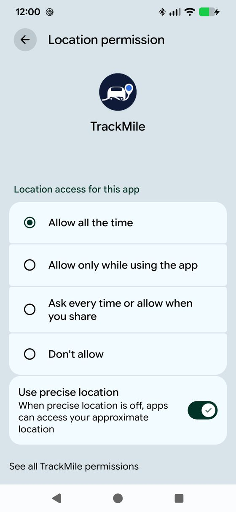
TrackMile then prompts you to open this system settings screen and switch to Allow all the time. Without this, detection only runs while the app is open on screen — it won't notice a drive starting in the background.
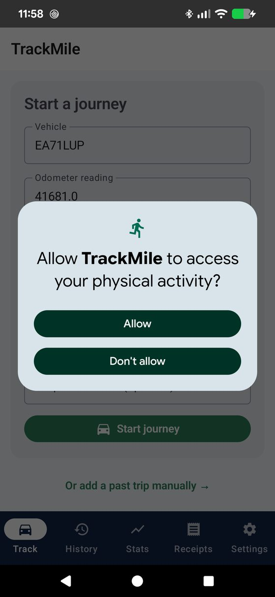
This is what lets TrackMile notice "in a vehicle" without GPS running constantly. Declining it doesn't break detection, but it becomes noticeably less battery-efficient, leaning on GPS alone instead.
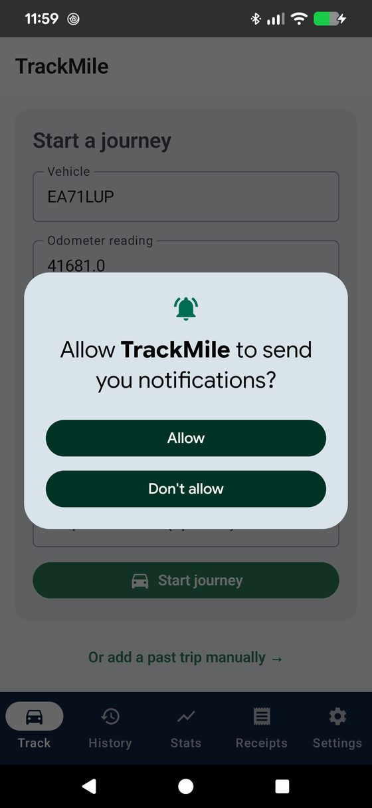
Lets TrackMile tell you when a trip's been detected or ended. Entirely optional — decline it and detection still works exactly the same, you just won't get a nudge.
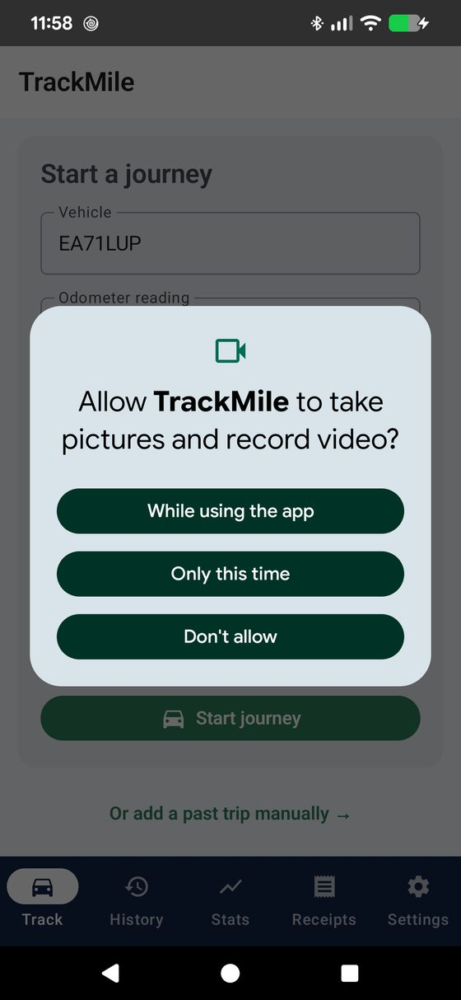
Not part of setup at all — this only appears the first time you photograph a fuel or parking receipt. Skip it and every other feature, including mileage tracking, works exactly the same.
Said no to something by mistake? Nothing's locked in — Android Settings → Apps → TrackMile → Permissions lets you change any of these afterward, including switching Location from "While using the app" to "Allow all the time" without reinstalling anything.
No — TrackMile doesn't poll GPS continuously. It subscribes to Android's low-power motion sensor and only switches on full-accuracy GPS once it's confident you're actually in a moving vehicle, easing back to a slower check rate once a trip is confirmed. You can also choose a lighter detection mode, or turn detection off entirely outside a schedule you set.
That's expected, not a bug — "While using the app" only lets TrackMile see your location while it's open on screen, which means it can't notice a trip starting in your pocket. Automatic detection needs "Allow all the time," set separately in Android Settings → Apps → TrackMile → Permissions → Location. See the Permissions walkthrough above for exactly where that toggle lives — no reinstall needed, it takes effect immediately.
Nothing. TrackMile has no cloud backend and no account system — every journey, receipt and vehicle lives in a local database on your phone. The only time data leaves your device is when you explicitly export or email a report yourself.
You can always add a trip manually, correct an odometer reading or start time after the fact, or reclassify a journey from History. An "Incomplete trips" recovery section also catches anything that started tracking but never finished, so nothing is silently lost.
Car, van, motorcycle and bicycle, each with the correct current HMRC rate, and unlimited vehicles per account — Statistics breaks your totals down by vehicle type automatically once you've logged mileage on more than one.
No new account is required. Calendar sync writes to whichever calendar is already set up and syncing on your phone — Google, Outlook, iCloud or otherwise — and email export just opens your existing email app with the report attached.
Pricing hasn't been finalised yet — this page will be updated as soon as the Play Store listing is live. The plan is to keep the core tracking and HMRC reporting genuinely usable regardless of how it's monetised.
Leave your email and be the first to know the moment it's live on Google Play — no spam, just the one message when it launches.
This form doesn't send anywhere yet — wire it up to your mailing list of choice before publishing.